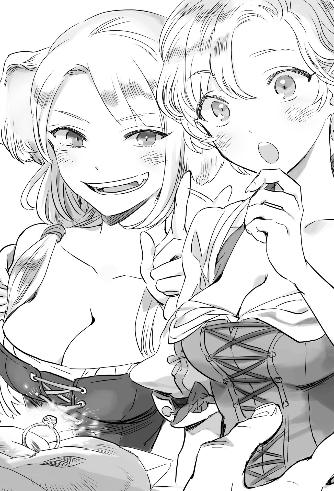
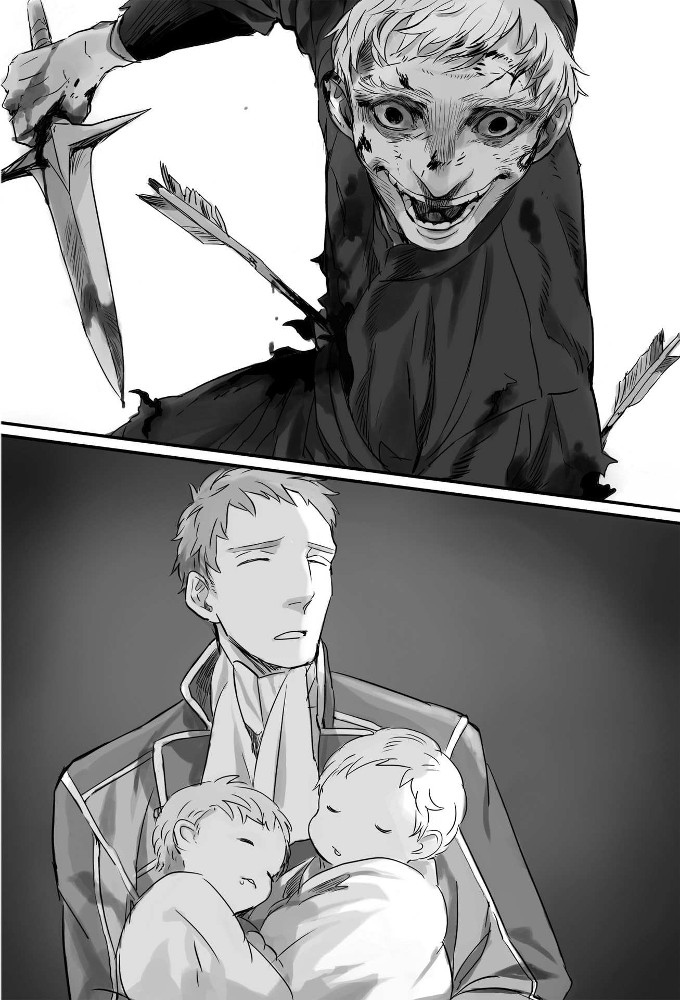

Chapter 2 – Assassin
.
Part 1
The death of the great leader of the Seven Elders. It was a terrible event that erased the historical victory of Mulberry.
After the kingdom was destroyed and the maritime guild lost the country that it depended on, it was undoubtedly Piaggio’s achievement for organizing the maritime guild to be able to oppose the dukedom somehow or other.
He didn’t allow the other elders to catch up with him when it came to connection and financial power. He had consistently defended the interests of the maritime guild until now. Piaggio was someone with excellent sense of balance as the leader of the organization.
The fact that he died heavily weighed on the shoulders of the elders and also Baldr.
The members of the Seven Elders had decreased to five people now that Gastone and Piaggio had died.
The problem was that even if one of the remaining five became the new leader, it was impossible to expect a leadership as skilled as Piaggio.
Augusto was still too young, while Lambert and Barbarino had their duty as the armada commander.
The legal officer Pietro had the tendency to be too inflexible, while the finance official Mario was more capable in economy rather than politic.
Piaggio had rich life experience and the tolerance to accept temporary financial loss for political need. A leader like him was difficult to find.
「──I was too naïve for thinking that everything has been settled in the battlefield.」
「The enemy is just that cornered. Because although the effectiveness of assassination is great but its side effect is also just as great.」
Ramillies consoled Baldr. His expression completely betrayed his words.
During his whole life, the rage that he was feeling right now was only second to the rage he felt when he lost Viktor.
But the words that he said to Baldr also wasn’t a lie.
Their loss from Piaggio’s assassination was too great, but the dukedom also had great lost from this.
Mulberry was wrapped in deep sadness right now, but once thing calmed down a little, the city would surely burn with enmity toward the dukedom. There would be no need to worry about another traitor like Gastone appearing from the maritime guild for several years until the memory of this incident faded.
And then the problem for the dukedom was that by using the method of assassination, no one would consider the dukedom as negotiation partner that could be trusted anymore.
The dukedom’s dignity and reputation would greatly fall because anyone would worry about the risk of getting assassinated the moment they entered negotiation with the dukedom.
At the very least with this the option of peace between the maritime guild and the dukedom was now nonexistent.
The maritime guild was also a mutual aid organization of merchants. No matter the world trust was number one in business, and now the dukedom had completely lost that trust.
The maritime guild had no more choice. They now had to continue fighting the dukedom with Baldr as their figurehead until they won.
「……First let’s bring the body of Chairman Piaggio to the shrine of Okeanos. I pray that he can at least obtain peace in the next world.」
「Dam you the cowards of the dukedom! I swear that I will settle this grudge no matter what!」
Admiral Barbarino was especially furious seeing his sworn friend killed right before his eyes.
Piaggio and Barbarino were close in age, and they were already inseparable friends since before they became elders.
──If only he moved just a bit faster.
If there was anyone who was strong enough to save Piaggio at that time and also within the close distance where it was possible, then there was only Barbarino. His rage and anguish were very deep because he understood that.
The victory celebration now became a solemn mourning. The people’s feet were walking toward the shrine of the sea god Okeanos, the spiritual pillar of the men who lived in the sea.
Piaggio’s body that was placed in the shrine would be buried at sea in accordance to the believer’s propriety, but until then the line of people coming to pray and offer flower for Piaggio never run out for three days and three nights.
Like this, although Baldr won a complete victory at the stage of large scale battle, he ended up losing a precious retainer who was more precious than even gems.
.
Part 2
While Mulberry was grieving over Piaggio’s death, Satsuki was also in anguish while lying on her bed.
She felt that she was unbearably pathetic with how powerless she was when she lost her trump card the King’s Gate.
The figure of the girl who confidently declared that she would measure Baldr’s strength when leaving Gartlake couldn’t be found anywhere.
Over here was just a normal girl who was scared after feeling the terror of death for the first time.
There were times when she felt that she lost a fight. Her mother in the past served as a wall that she couldn’t surpass for a long time.
But this was her first time thinking that she would really be killed. Even though she should have experienced the exchange of lives in the battlefield, she thought that she herself wouldn’t die.
If her luck was just slightly worse, Satsuki would have died.
The proof was her current condition that had wounds all over her body that weren’t shallow at all.
If Baldr arrived just a bit later, Satsuki’s life would have ended at that place.
「How are your wounds?」
「Unyah?」
The person who was in her mind right now came, so Satsuki couldn’t stop herself from letting out a strange voice.
Baldr peered onto Satsuki’s face dubiously. His face was too close that Satsuki reddened more and more.
She was unable to forget that moment when Baldr’s back protected her.
Even though she was trembling from fear that she couldn’t even stand up, Satsuki was certainly delighted at that moment.
Baldr was the first male to protect Satsuki since she grew to be a maiden in puberty.
It couldn’t be helped. After all there was effectively no man who could defeat Satsuki in Gartlake.
「I-I’m fine nya. They said that the wounds also won’t leave any scar nya.」
Satsuki spontaneously talked with polite language.
「I see, that’s great.」
Baldr smiled in relief. Satsuki’s face heated up once more because of that.
Baldr sat down on a chair to talk face to face with Satsuki. He sensitively guessed Satsuki’s worry.
「──You don’t need to force yourself to fight you know?」
Only those who had faced death could understand.
There was case where fearless fighter who was undefeated in training became completely useless in real battle.
The fear that he might be killed by the opponent made his courage shriveled. In this case it could only be left to the person himself to conquer this problem.
No matter how strong someone was, they would still be unable to escape the possibility of dying in battlefield.
Baldr who saw Piaggio’s death from nearby was thinking that if Satsuki was wishing for it, then she should be put far away from such death.
Putting aside exception like Maggot, it was enough for only men to go out to the battlefield by their own choices.
「I don’t want that nya.」
Satsuki shook her head fiercely.
A part that made her said that was because of her fear to recognize her own weakness, but the biggest part of it was the feeling of lost because she was unneeded by Baldr.
「Small wounds like this aren’t any problem at all nya. I’m still a bit weak right now but, I’ll get right back on my feet soon nya!」
「Even if you might get into another scary experience?」
「Because, I can’t win against Selina or Seyruun except in fighting nya!」
Satsuki didn’t know the way to devote herself to Baldr in the same way like them. Her fighting prowess that was beaten into her since her childhood was the only thing that she could rely on here.
Satsuki clung on Baldr’s chest with a serious gaze that was unlike the usual her. Baldr scratched his head with a slightly troubled look.
「Setting aside whether you are useful or not……I’m thinking of Satsuki as a girl of that age so……」
Baldr smiled shyly. Regardless of her strength, he just didn’t want her to get injured.
Perhaps it was because of that.
Satsuki formed a sentence that her usual self wouldn’t even be able to imagine and absolutely wouldn’t say.
「Then, I want you to comfort me kindly nya.」
She wanted to be spoiled like a girl just for now. Then she would be able to fight again.
This time it wouldn’t be for her homeland or for the cat-eared tribe, but for Baldr.
Baldr continued to gently pat the small body of Satsuki that tightly hugged him.
(So small. She might not be that much different from Sey-nee.)
His perception of her as a reliable beastman girl was starting to change into a special girl for him.
.
「UNYAAAAAAAAAAAAAAAAAAAAAAAAAAAAAAAAAAAAAAAAAH!」
When Satsuki became alone and regained her sanity, she hugged her pillow on her chest and rolled around on her bed in shame. This happened after around one hour passed since then.
.
Part 3
「──Too slow-!」
While Baldr was fighting far away at Trystovy, Silk was losing her temper at the mansion of Marquis Randolph in Mauricia Kingdom.
Even though she wanted to rush to where Baldr was even just for a second faster, she was forced to house-sit like this. This was because of her position as the commander of Marquis Randolph’s army as well as the need for her to welcome the beastman race’s reinforcement as the future queen of Trystovy.
It was scheduled for Antrim army’s second unit and Nordland Empire’s beastman army to link up with her at the end of the month. Then she would lead a total of ten thousand troops and departed to Trystovy.
But various obstacles started to hinder Silk’s departure during this time.
First regarding the beastman race’s reinforcement, the nobles of Mauricia Kingdom were in opposition to a large army of 3000 beastmen crossing through their territory even though the army came from an allied country.
Certainly there was a risk that an organization of violence like an army would spread damage just from moving. Not to mention that naturally there were still nobles who hated beastman because of prejudice.
Because of that, they had to talk to the nobles under the influence of Randolph House or Antrim House behind closed doors so that the beastman army could move throughout Mauricia Kingdom although there would be a lot of detour.
At this rate it was highly possible that their arrival would be delayed until next month.
「……Silk-sama.」
「What is it?」
A maid named Chris who had accompanied Silk for many years called out to her. Silk responded back to her in ill humor. That was because she knew what Chris would say.
「That person is visiting again. What should I tell him?」
「Perhaps it will be alright even if I stop being patience soon.」
「If my lord is present, I think he will have already angrily shout at him before my lady can do it yourself.」
Yes, Alford was heading to the capital since a few days ago.
Although the king had given his private consent, the groundwork still had to be laid beforehand in order to move the army of Randolph House that was one of the ten great nobles.
「Perhaps it’s already the time to abandon them. For now show him the way to the guest room.」
「As my lady wish.」
.
For Godfried, one of the refugee nobles from Trystovy, the current situation was a great chance.
For the nobles who flee from Trystovy Kingdom, the recapture of their native land was their dearest wish.
In the battle this time, not only Mauricia Kingdom, even Nordland Empire’s beastman unit and Majorca Kingdom’s fleet also participated. The chance of victory of this was high.
──But there was a problem. It was that Margrave Antrim, Baldr was trying to inherit the throne of Trystovy.
Godfried who had the self-acknowledgement of descending from a noble bloodline absolutely couldn’t accept such development.
Thanks to his rival, a fellow refugee noble called Quatuor confining himself indoors because he seemed to fear something, he was able to reach the highest position among the refugee nobles without much effort and reigned over them. Things went well to that point.
What was left was to cajole Silk somehow, borrowed the strength of Mauricia Kingdom, recaptured Trystovy Kingdom, and he would wield the authority as king.
Godfried(ゴドフリート) was drawing such richly colored map of the future. But as though to sneer at him, Baldr became engaged with Silk and he even began to claim that he was the legitimate heir of the throne.
It was like a bolt out of the blue for Godfried. It was especially a problem when various countries were recognizing Baldr’s claim.
Silk didn’t have the right to the throne even though she had the blood of Trystovy royalty within her body. She could be said as a very convenient existence.
It wouldn’t be a dream for him to become a king as long as he had the justification. Godfried’s ambition was a delusion that was equally shared by the refugee nobles.
But, actually a grandchild of the late King Umberto I was living in Mauricia and her son become a hero who climbed the rank until he became a margrave.
It was a terrible miscalculation on their part.
The only remaining hope of Godfried was Silk alone.
Baldr was inheriting the dirty blood of beastman. It should be more than enough to be a reason to end the engagement.
He had to seize Silk’s feeling somehow and took her away from Baldr.
Recently Godfried kept visiting Randolp House was for such thing.
.
「──I should have announced before this that we are currently busy with the preparation for the departure to the frontline.」
Silk appeared at that timing with an exasperated voice and displeased scowl.
「……Why does Silk-sama need to trouble yourself with such crude tasks personally? I don’t think that Randolph House is that lacking in manpower.」
Godfried said that while looking genuinely puzzled. Silk’s disappointment to him dropped further into a complete exasperation.
「Let’s forget about such matter. I have obtained a rare flower recently. It’s an orchid that only bloom at Keltiath Kingdom at the furthest east of the continent……」
Godfried smiled proudly. Silk’s gaze toward him turned even colder and she said.
「Do you think that this is the time to leisurely admire flower even though the battle has already started at Trystovy?」
If he wanted to win Silk’s favor, he should take the initiative to join the battle and used his connection with his relatives in Trystovy to gather information.
Godfried who had been living for more than ten years by relying completely on other people didn’t understand that.
「If you have time for something like this, why don’t you take sword and stand up to fight? Isn’t Trystovy also your homeland?」
「H-however the risk of losing the precious few of the kingdom’s nobles is……」
The kingdom’s nobles who succeeded in fleeing to refugee were less than twenty houses.
Godfried was someone who descended from the bloodline of Marquis Piacenza House. So even among all the refugee nobles he had the most noble bloodline that was at the same level with Quatuor.
「Then are you going to remain a spectator without doing anything just like now? How are you planning to face the new king later on?」
「But I am a noble of the kingdom from a house with long history!」
Godfried didn’t even want to consider risking his life in the frontline, but he similarly didn’t want to bend his knee toward Baldr who had beastman blood in him.
In the first place a beastman inheriting the royal bloodline of Trystovy was a mistake in itself wasn’t it?
Now that the royal family had perished, he should be the noblest existence within the kingdom, and yet…….
「Please look at the reality for a little. Baldr-sama is the person who will become my husband. He is also someone with great authority in Mauricia Kingdom that can be counted among the top three. Both Mauricia Kingdom and Sanjuan Kingdom are also supporting his claim to the throne wholeheartedly.」
In other words, no matter what Godfried said, there wasn’t any country anywhere that would support him.
After all Godfried was just a rootless wanderer who sought asylum here. He couldn’t even live by himself without counting on other people’s help.
This was a fact that was hard to accept for someone with high pride like Godfried.
「……Why can’t Silk-sama be the one who sit on the throne? To have a beastman as a king will leave a dishonor to the country until a thousand years in the future!」
「Shut your mouth!」
Godfried who was yelled at by Silk spontaneously trembled.
「You should prepare yourself to turn Randolph House into your enemy if you dare to insult Baldr-sama in my presence. That’s if you think you can live even after losing my house’s patronage.」
Godfried who was about to say that Baldr wasn’t worthy for Silk choked.
If Randolph House abandoned him, there was no doubt that he would immediately fall into poverty and he wouldn’t even know what to do to go through this day. After all he didn’t have anything else in this Mauricia Kingdom that could be used as the foundation of his life.
「If you don’t have the resolve to stand on the battlefield, you should try to spilt the opposition at the dukedom’s side at the very least. If you can’t even do that, we also won’t have any reason to keep you under our patronage.」
「Y-you are saying that you helped us only to make use of us!?」
「Obviously. We have been sheltering all of you until now because we thought that you would be useful for when we take back Trystovy one day. There is no way we will accept a baggage that is nothing but a burden unless there is a reason!」
Godfried believed that he was helped because of his noble bloodline from a marquis house, but this declaration made him felt like the ground under him was collapsing.
The world of politic was made up from lending and owing favors to a greater or lesser extent, but the kingdom was destroyed when he was young before he could learn the inner working of that.
He believed that his position was equal to Silk because both of them were from marquis house.
But Silk’s merciless and scathing words made him realized that he had been acting like a clown until now.
Godfried who thought that things would go well if he could just cajole Silk into a romantic relationship with him was stupefied to learn that it was actually him who was a puppet whose strings were manipulated by Silk.
「If you still don’t have any accomplishments to show when Baldr-sama obtain the kingdom, then prepare yourself to die a dog’s death. The only thing that will protect your livelihood is only your usefulness.」
Godfried was still mumbling something with hollow eyes. Silk spoke to him to jolt him awake.
「──Do you understand?」
「I, I understand. I shall answer your expectation by all means.」
Godfried immediately left with a pale face. When he was gone from view, Silk let out an exaggerated sigh and pressed her hand on her forehead.
「I should have done this right from the start. Good grief, what a pathetic man.」
He can’t be compared with Baldr at all ──Silk grumbled while thinking of her beloved fiancée who was far away from here.
Just like how Baldr had stopped being a boy, there was a woman here who chose to break out from the shell of a girl and lived as an adult.
.
Part 4
──Meanwhile, Silk wasn’t the only woman who was fighting.
Seyruun was giving her all to take care of the twins at Antrim while Maggot was gone. She was doting the twins who had the vestiges of Baldr when he was little.
Selina was making great progresses with her business like there was nothing that could stand in her way.
They didn’t have the martial skill to be able to act together with Baldr at the battlefield like Silk or Satsuki.
But they became great help for Baldr more than anyone at the respective field they specialized in.
Recently there was a comrade who joined them in that.
「……Princess, ya don’t really need to force yerself to do this y’know?」
「Please don’t mind me. I too have to do something if I want to be able to face Baldr-sama proudly. Besides I’m not a princess anymore.」
「I see, I’ll call ya Rachel-han then.」
「Yes, that’s why please work me hard as much as you want, Selina-sama.」
Strictly speaking, Rachel was still a princess even now as an adopted daughter of Nordland’s emperor, but that was nothing more than a mean for her to become Baldr’s concubine.
At the very least Rachel considered it like that. Then from there it was only natural for her thinking to develop to her wanting to be useful for Baldr from an equal position.
After thinking hard, Rachel assumed a consultant post at Selina’s Savaran Company.
Rachel’s connection, etiquette lesson, and her deep knowledge about noble society was something that was very hard to obtain for Savaran Company that was owned by a commoner like Selina.
Regional bond, blood relationship, and work relationship entangled with each other in a complicated mess within noble society. It wasn’t easy for Selina to learn about such hidden circumstances.
「Honestly ya are a big help……recently the criticisms that are coming to our place is getting’ stronger.」
It was difficult to try something to Dowding Company that was growing in leap and bound right now, but Savaran Company had smaller scale and less personnel. It was an ideal target for the rival companies.
It was the common knowledge in the business world that there was Savaran Company hiding in the shadow of the rapidly expanding Dowding Company.
It was no wonder that many were thinking that they might be able to catch up to Dowding Company if Savaran Company was just gone.
If Selina wasn’t a fiancée of the hero Baldr, she might have been kidnapped, threatened, or harassed in more indirect way.
Even Selina who was used to snide comment and malicious gossip was deeply wearing out her nerves because of the malicious obstructions.
No matter what there were still many people who looked down on Selina because she was a beastman.
But Rachel was the biological child of Mauricia’s king Welkin and the adopted daughter of Nordland emperor. At the very least there wasn’t anybody who had the guts to harass her openly.
In fact, the effect from Rachel’s presence was immediate. It drastically reduced Selina’s burden when attending a meeting or party with fellow merchants.
Even so it was also a fact that the sabotages were still continuing in tangible and intangible forms.
But what disturbed Selina the most was that these hindrances were also obstructing her from supporting Baldr.
That was why right now Selina decided to take a great challenge.
「……Wait for me, Baldr.」
Even if she wasn’t useful in the battlefield, her heart would always nestle close to him.
If his husband was wielding his sword at Trystovy, Selina resolved herself to fight using money as her weapon in Mauricia.
The carriage that Selina and Rachel were riding was passing the lake shore of Aleister Lake with rattling sound.
.
Part 5
At the main street of the royal capital Cameron, there was a company with conspicuously large gate built as its entrance.
It was the remodeled appearance of Dowding Company that had gone beyond the framework of a single country and right now had become one of the prominent general companies throughout the continent.
From daily necessities like sugar and salt to things like high grade textile or cosmetic, the number of products it handled reached several thousands. Its customers included a lot of high class nobles and royal families.
Using its overwhelming financial strength and customer amount, Dowding Company was currently ruling as the strongest and biggest company in Mauricia Kingdom.
Selina and Rachel’s carriage left the entrance of the store that was crowded with a lot of people and passed through the courtyard to stop at the entrance that was prepared for the guest of honor.
「Welcome!」
The one who welcomed them with wide smile was the vice president of Dowding Company and a shrewd merchant, Thomas.
He was the one who raised the greatest accomplishment for Dowding Company’s expansion using his many connections to foreign countries. His authority was said to practically surpass even the company president. Right now he was at the peak of his popularity as the number one candidate to be the president in the future.
「I’m honored that the vice president personally came down to welcome us.」
「It’s the greatest honor to be able to welcome two beautiful women like this.」
Thomas took the hand that Rachel offered him and deeply bowed from his waist.
Seeing Rachel able to act in high class manner so naturally like this made Selina thought that she really couldn’t match Rachel who was a born noble.
After Rachel got down from the carriage, Thomas offered his hand to Selina with an excited huff as though he had been waiting for this.
「Haa……please take this hand!」
「Vice president should lead the way for Rachel-sama!」
The one who bumped at Thomas with her whole body to send him flying was his private secretary Cirrus(シーラス).
Actually the two of them had unexpectedly started a relationship with each other since last year.
Just when it looked like he had been able to rid himself of his unproductive feeling toward Selina, this happened. It really wasn’t easy for him to be able to make a clean break.
「That was really cruel of you Cirrus. Even though my heart completely belong to you……」
「I’m jealous! A man who does something that make his lover uneasy should get salary cut!」
「Do yer lovers’ quarrel at other place.」
Thinking back these two had known each other for long.
The two of them seemed to be slightly loose at their private life like this, but Selina knew that they were extremely reliable comrades when it came to business.
.
Inside the drawing room that Dowding Company was proud of worldwide.
Painting, porcelain, sofa and carpet. Everything inside that entered the eyes was all expensive things.
Even Rachel who should be used to luxury as a royal family member opened her eyes wide seeing the extravagant room.
(The power balance between commoner and nobles has been overturned in financial aspect. I had heard that from Selina-sama but this is……)
Rachel now experienced the truth of those words with her own eyes.
Most likely eve just the total assets of the major companies in the capital could rival the nation’s budget.
If the economy developed even more from here on……no, the economy would definitely develop further.
Because when Baldr ascended to Trystovy’s throne, the degree of freedom of the economic circulation of various countries would dramatically increase.
Recently even the low class bureaucrats had heard that the advance of the wealthy commoners was remarkable.
Perhaps ten years later the commoner’s standing would have been elevated to an incomparable height than now.
「Thanks to us being allowed to monopolize the circulation of Sanjuan Kingdom’s salt, it looks like we will be able to once more renew the record of our highest profit this year. It looks like the matter that we talked before will also be able to take shape next year.」
「Ya will gather resentment again after buying up all of them with dirt cheap price.」
「There is no need to pay attention to that. A merchant who envy and blame other people because of their own blindness is just a second rate or lower in the end.」
「An insignificant company like mine can’t make light of that resentment though.」
Self-responsibility was the principle of merchant.
Someone who blamed their lack of talent as other people’s fault couldn’t possibly become their rival.
What was really scary was someone who never slack in analyzing and reflecting and could even use their loss as a rare chance to continue having transactions with their rival instead.
「──What is this matter that you talked before?」
Gufufu…… Selina and Thomas smiled wickedly at each other. Although Rachel was creeped out by that, she unconsciously got curious to Thomas’s words.
From the devilish smile that these two sported, they must be hiding a new product that was really promising.
Also from how enthusiastic Selina on the way here, Rachel believed that their outing this time had a significant reason behind it.
「Does Rachel-sama has diamond accessory?」
「No, it’s not really popular among Maurician so……could it be the matter that you mentioned just now is about diamond?」
「It’s exactly as you guess. This is a plan to sell diamond to every corner of the continent as the king of jewels!」
Thomas puffed out his chest and spoke passionately. Rachel was incredulous at him.
The market value of diamond wasn’t that high.
Diamond gave the impression of the jewel of the commoner. As a royalty, Rachel was utterly unable to imagine that diamond could be famous throughout the continent.
「Well, it’s only natural that Rachel-han is thinking like that. I was also taking in this story with a grain of salt when Baldr told me about it.」
There was a phrase ‘unpolished diamond’.
The world famous cursed hope diamond that was currently displayed in Smithsonian Museum at America was considered as 112 or 113 carat diamond when it was discovered.
However that diamond was then boldly cut by the statesmen of that time including Louis XIV. Right now that hope diamond was only 45.5 carat.
No matter how big a diamond was, it wouldn’t worth much unless it had been cut.
The diamonds that were cut at the ancient era were cut colorless and transparent. Its shine was also mediocre compared to other gems like ruby, agate, or emerald. No one would even look at it.
The history of such diamond was old. Record about it could already be found in India’s literature from 300 BC.
Although the technique to polish it was only developed starting from the middle of 15 th century.
Diamond had to wait until 1919 when Marcel Tolkowsky calculated the brilliant cut before it genuinely became the king of jewels.
The light’s refractive index of diamond was high compared to crystal or glass. The light that entered from outside to inside would be reflected complexly and produced three effects.
Scintillation: The light looked sparkling at the surface.
Brilliancy: When the light that entered inside returned outside, the light became even whiter.
Dispersion: Because the light was reflected many times within the diamond, it created rainbow colored brilliance like prism effect.
This complex and gorgeous radiance was what made a diamond a diamond.
Brilliant cut was a product of the math and geometry of that time. The refractive index and angle of reflection of light of diamond that was cut to have 58 surfaces had to be accurately calculated.
Selina and Thomas formed an experiment team that was composed of jewelers and mathematicians before they finally calculated the old mine cut that was the prototype of brilliant cut.
「……This is the diamond that resulted from that.」
Thomas placed a diamond ring on the table. Rachel doubted her eyes when she saw it.
Any jewel had their own unique radiance, but Rachel had never seen a jewel this dazzling with such complicated shine until now.
If this thing got out into the market, it would definitely become the hot topic of the high society of all countries.
Rachel couldn’t even imagine how high the price of this thing would climb up. Furthermore this thing was made from processing raw ore that was purchased with dirt cheap price that was almost no different from buying it free of charge.
It might even be possible that this would produce profit that could purchase a small country.
Furthermore the degree of difficulty of processing diamond was high. Even if other country tried to imitate it, that wasn’t something that could be done in a short time.
「How shocking. I can guarantee that there won’t be noble woman who doesn’t desire this.」

「That’s not all y’know?」
Selina added with her nose huffing proudly.
「Diamond is the hardest mineral in this world. Gold is popular for marriage ceremony because it’s hard to rust, but what do ya think will happen if a ring of diamond that has the meaning of the world’s hardest bond come out?」
「──Everybody will definitely leap at it. The influence that this radiance will give to the maidens is different.」
Even she also wanted it no matter what.
Just from imagining the scene of Baldr presenting her with a diamond ring in their marriage ceremony made the beating of Rachel’s heart grew uncontrollably.
That would truly be the dream of maiden that held fantasy toward marriage.
「Ain’t that right? I absolutely want this project to be completed in time for our marriage ceremony but, I hope the marriage ceremony of her highness Margaret will also be able to use this.」
「That’s lovely. Margaret too will surely be happy!」
Rachel thought of her little sister who would marry into Haurelia Kingdom in the future and she broke into a smile.
Her little sister had kindly looked after Rachel when she was wavering with her love toward Baldr. There would be no greater present than this to celebrate her little sister’s marriage.
Besides VIP from various countries would also be invited to the marriage ceremony. The promotional effect of such event would be tremendous.
She had known this beforehand but, as expected Selina and Thomas’s business talent was number one even in Mauricia.
Rachel turned a respectful gaze toward Selina once more.
「──And so, this gonna be a big business, so I’m thinkin’ to ask Dowding Company to absorb Savaran Company here.」
「What did you say!?」
Thomas who had never heard about this before stood up in shock.
「Isn’t Savaran Company a precious company that you inherited from your father?」
Thomas shook his head in disbelief at Selina’s words.
In the past Dowding Company once tried to buy and absorb Savaran Company.
Selina’s reaction to that was to continue protecting Savaran Company’s independence with firm determination until now.
Just what kind of change of heart had visited her?
「One of the reasons is simple. In case I entered Trystovy Kingdom’s inner palace as Baldr’s concubine, it would be effectively impossible for me to manage Savaran Company ain’t it?」
Selina’s eyes were already looking at the future where Baldr was crowned as the king of Trystovy.
If she became a king’s concubine by any chance, although she could still become a company’s patron she would be unable to become the company’s actual manager.
Rorona was a trusted confidant with excellent management skill, but she was a type who could display her skill as the number two rather than the one standing on the top as the manager.
「──Even so, it also won’t be impossible to manage the company from the inner palace won’t it?」
If Rorona wasn’t suited to become the top leader, Selina could just search for someone with good lineage to be the president as a mere decoration while she controlled the company from behind the scene.
Thomas didn’t think that such reason was enough to discard the name of Savaran Company at all.
「Well, I guess I can’t trick Thomas-han with that kinda reason. That’s my reason at the surface y’see.」
Selina lifted up the corner of her lips boldly. Thomas unconsciously felt like there was an icicle that was inserted into his spine seeing that.
At the same time he felt a violent pressure and sex appeal that was like morning dew trickling down from a moist flower from that smile.
Selina looked so beautiful that he held his breath and became speechless.
He had been thinking of her as beautiful all this time since they first met, but the current Selina undoubtedly looked the most beautiful until now.
「From a glance this look like a takeover of Savaran Company, but the true state of affairs ain’t like that at all. This gonna be a military alliance with Baldr.」
「……I believed that our company already has good partnership with Margrave Antrim though.」
Thomas’s instinct was telling him that he couldn’t reply carelessly here.
Dowding Company had been doing everything it could to accommodate the sale of Antrim’s product and transporting the materials.
If Baldr wanted to procure war expenditures, Dowding Company was also willing to lend him money with low interest rate.
And yet, Thomas didn’t understand the reason why Selina was looking for even more cooperation from them.
「It’s not cooperation. I’m sayin’ it’s an alliance. Furthermore it will be a military alliance, so the obligation that has to be fulfilled here can’t be compared if we are just in a normal alliance. We gonna ask for a lot of things from Dowding Company.」
──This was a business negotiation.
Thomas suddenly noticed that the battle had already started.
Selina was challenging him with an extremely dangerous business negotiation.
「It will be troubling even if you are looking for such exaggerated thing from a mere merchant like us.」
「The jealous merchants are gonna cryin’ if you put the supreme Dowding Company in the level of mere merchant y’know?」
Thomas calmly brushed aside Selina’s bold provocation.
「Till the end we are just a merchant and not a statesman.」
「Naturally. What I’m askin’ ya to do till the end will still be within the limit of merchant’s activity.」
There was no idiot who would ask merchant to do political maneuver or military action.
But merchant had way of fighting that could only be done by merchant.
「If it’s Thomas-han then ya must understand. We merchants actually can kill people easier than soldier can.」
Even though a merchant wanted to buy farmer’s crops with high price based on kindness, they couldn’t do it because of the market price and distribution route.
They couldn’t do it even if it resulted in the farmer starving to death.
Also the revolutionary products that Baldr invented would render the manufacturers of the traditional products to be out in the cold together with their family.
If there were people who profited, there were also people who inevitably bore loss out of sight.
That was the cruel reality of business world. Co-existence and co-prosperity, win-win relationship, such things could only be formed in a very limited period.
Even Selina and Thomas, although they had never personally killed someone with their hand, they had the awareness that they had indirectly killed people while doing their business.
「That’s right. That’s exactly why we must never be carried away by our emotion.」
That meant they couldn’t support Baldr more than necessary. Thomas believed that.
If they were a merchant, then they mustn’t build a relationship with statesman where they shared their lot with one another where they would live together and die together.
「I’m also a merchant. I’m not plannin’ to move Dowding Company by just appealing to yer emotion.」
「Then what are you going to offer us?」
「How does being the exclusive purveyor to Trystovy Kingdom sound to ya?」
Selina laughed in amusement when he saw the color of disappointment clearly dwelling in Thomas’s eyes.
「I’m joking. I never thought that Dowding Company is gonna be tempted by somethin’ at that level.」
「Looks like it’s too early for me to feel let down.」
Certainly the profit would be immense if they became the exclusive merchant of a country’s royal family.
However that was a double-edged sword.
There was a risk that they could also get dragged into a political strife if they got closer than necessary to a royal family. There were also innumerable cases of exclusive merchants who became bankrupt when the generation changed and the new king or noble decided to stop using their service.
For Dowding Company that boasted tremendous market in multiple countries, the position as exclusive merchant wasn’t that appealing, rather it was unattractive for them and would only bring them harm.
「Then, let’s get into the main topic.」
Selina said that and changed her expression.
Thomas clearly felt that her aura had become dangerous.
「The role that Baldr sought Dowding Company to fulfill is tough y’know? Both sides should be equal to each other because this is an alliance but, Dowding Company will effectively become the subordinate in this relationship for ten years from now in case ya accept.」
「──Are you telling our company to wag our tail to you like a dog?」
Dowding Company wouldn’t surrender unconditionally even if its opponent was Mauricia king.
Dowding Company was a multinational company. Even if it abandoned Mauricia Kingdom, they had enough power to continue on despite that.
They could just get out if they were oppressed. In that case, the oppressing country would be the one that was harmed.
It was only natural for Thomas to be angry.
「This is the only point that I can’t yield. After all the reward to Dowding Company is gonna be fully dependent of Baldr’s personal power.」
「Margrave Antrim certainly has numerous wonderful ideas, but do you think that we will throw away our freedom just for that?」
Cosmetics, salt and sugar’s production increase, and in addition even the production method of diamond. Baldr’s knowledge guaranteed them immense profit. However it wasn’t enough at all for Dowding Company to discard its position as a free merchant and became a politician’s pet dog.
「Sorry but Thomas-han is underestimatin’ Baldr too much.」
There was no change in Thomas’s expression but inside he was puzzled by Selina’s words.
After all Thomas believed that he was someone who evaluated Baldr highly instead.
「The reward for Dowding Company if it put itself under our umbrella is the economic domination of this continent by Dowding Company.」
「──You’re joking right?」
Dowding Company was a gigantic company that greatly outdid the other companies in Mauricia Kingdom, but even such company was just barely approaching the top ten companies in this whole continent.
The difference with the top 5 companies was even more striking than that.
It wouldn’t be enough just to take the top place if one wanted to dominate the continent. They would have to rule over all the merchants with overwhelming difference in power.
Thomas couldn’t believe at all that there was a method to make such dream come true.
「Baldr can do that. He can grant that. This ain’t an idea but a system, something that can’t be copied.」
「Can I hear the detail?」
「There is this intelligence agency managing the information that came from Baldr’s subordinates in Antrim territory and the beastman race from every country that are organized to be an intelligence network.」
It was common knowledge that information was life for merchant.
But it was also common sense that the merchants’ information network was so excellent that it surpassed even nation in a sense.
To be honest, Thomas couldn’t feel that the information that came from Baldr’s information network could be a factor to decide the future of Dowding Company.
「Yer face doesn’t look convinced. But what if I tell ya that I can obtain the information of Trystovy today at the day after tomorrow at the latest?」
「──That’s, you must be joking right?」
Thomas’s voice cracked because he was feeling too excited. The back of his throat felt dry.
If Selina was saying the truth, then Dowding Company certainly would be able to conquer the continent.
That just how important information was to a merchant.
「The experimental communication networks has already entered the practical usage phase. Baldr is the ray of hope for the beastman race, and the ability of Antrim’s intelligence operatives is also high. There is no way Thomas-han doesn’t understand what this mean right?」
Globe of sweat oozed out on Thomas’s forehead.
「Dowding Company will be effectively in control of the market price of the whole continent.」
The growing of corps wasn’t uniform in each country. It was possible that a crop that had abundant harvest in Haurelia Kingdom to have bad harvest in Answerer Kingdom.
For example, what if Dowding Company obtained information about a merchant fleet of a certain country sinking in ocean faster than anyone else?
They would definitely produce immense profit with no risk.
「……Why isn’t Savaran Company monopolizing this?」
If they had this kind of trump card, pushing up Savaran Company to be the number one company in the continent wouldn’t be impossible at all.
Thomas didn’t understand the reason why Selina would intentionally toss away that chance.
「What we need is power right at this moment. Baldr is fightin’ right now. He can’t wait for me to leisurely grow Savaran Company. We need the market and circulation route that Dowding Company has right at this moment.」
Ten more years, if she could wait for ten more years, it would be possible enough to develop Savaran Company to be the number one company in the continent.
But for Selina such thing didn’t worth to be compared to her future with Baldr.
What Baldr needed in his battle with Trystovy right now wasn’t Savaran Company but Dowding Company. That was the only important thing.
「Good grief, it’s really a waste.」
If it was Thomas who weighed between the continent conquest by Dowding Company and his lover, he would never pick the lover.
Even if he was called heartless because of that, merchant was essentially that kind of creature.
Rather it was Selina who was abnormal as a merchant for prioritizing Baldr.
「And what’s yer decision? Are you gonna accept or refuse this proposal?」
A bit of restriction wasn’t any problem at all in front of the bait that was the continent conquest.
Currently Thomas’s position was a vice president, but the president was already distancing himself from the practical business gradually. There was already nobody who could overturn the decision of Thomas who had continued to bring immense profit for the company.
Thomas was feeling a hot feeling of exaltation welling up from the core of his body after so long.
It was like the day he first aspired to be a merchant. The heat that was lurking in his heart obtained a definite form and blazed up.
「Of course, we will bet everything that Dowding Company has. Anyone who refuse this kind of offer can’t be called a merchant.」
Thomas declared with a silent confidence.
Even if he was in a subordinate position right now in this alliance, Thomas had the confidence that one day he would be able to stand as equal or even as the superior in this alliance.
Such long-term persistent ambition could be said as the long cherished desire that made a merchant a merchant.
「Then, the negotiation is concluded with this.」
「It’s a good negotiation.」
The two of them shook hand with wicked smile on their face. Rachel and Cirrus were watching with creeped out eyes.
They couldn’t help but feel that it was a great mistake for these two to shoulder a part of the world’s fate.
「What do you wish for from us to begin with?」
「The crops at Haurelia are cheap thanks to the disappearance of unnecessary military expense. Let’s buy them up for now.」
「Are we going to sell them for cheap to Margrave Antrim?」
「No, sell them to the dukedom instead with a price that is slightly cheaper than the market.」
Thomas immediately doubted his ears at Selina’s words that told him to support the enemy.
「Is that alright?」
「No need to worry. Mulberry’s maritime guild isn’t gonna make any blunder with the supply.」
Selina’s large dog ears were flapping in excitement.
「It’s human nature to want to stock a lot of food when war is goin’ on. If there is food that is slightly cheaper than the market price──」
「They will definitely buy it even if they go over the budget won’t they?」
「But, although food is important, payin’ for the soldiers’ salary and moving the troops also takes lots of money. The personnel expenses are also gonna go through the roof if they hire guards and horses to transport the food from us.」
「So this is a tactic to make the dukedom empty their wallet.」
「That’s a part of it.」
Selina stopped talking there and made a smile that looked the most gruesome today.
That smile was filled with cold pressure that looked like it could kill.
「But, I know. Baldr ain’t a man who gonna do something obvious like starving his enemy slowly. We are gonna sell a lot to them, and then at the end the wallet of the dukedom’s bunch and the food that we sold to them will all belong to us after Baldr defeat them. Baldr will be able to occupy the country as well as distributin’ those foods to the commoners for publicity stunt.」
Thomas of all people was at a loss for words at how nasty Selina’s modus operandi was.
Later on Selina would become a strong woman who was known to be scarier than even the first wife if angered. Right now was when that true character of hers was starting to appear.
.
Soon after that crops from Haurelia Kingdom began to circulate at the surrounding area of Trystovy Kingdom’s frontline.
「Buy up all of them while we can. Don’t be stingy with money.」
「Understood.」
When war came, the price of food getting hiked up was a natural phenomenon.
An army consumed a lot more food than ordinary people. The area affected by war would also have drastically reduced harvest. The transportation cost also jumped up, so it was obvious that people would leap at cheap food that suddenly appeared.
Even so not all the available food have long preservation period.
Among those foods there were also foods that had to be consumed quickly before they turned rotten. There were also foods that had to be processed further to preserve it.
The commoners were scrambling to get their hands on those kinds of foods.
Either way, there were a lot of nobles who felt relieved because they had avoided the unresolved food crisis.
It was also unknown how the war would develop in the future, because of that they stocked up more food than necessary against their better judgment for two or three years worth.
「──The salt’s price is rising you said?」
「It’s not just salt. The price of oil and textile also suddenly began to rise……」
The cheap salt that was suddenly starting to be mass produced at Sanjuan Kingdom caused the decline of the salt price in each country. It invited the decline of the salt industry in those countries. It was only natural because they couldn’t sell their salt with a price that was worth the effort needed to produce their salt.
It became a situation where salt industry became a national industry that only produced the minimum amount, so when the salt from Sanjuan stopped coming, the natural progression was for the salt price to increase explosively.
Many of the salt that should be exported to Trystovy Dukedom was flowing to Nordland Empire and Gartlake Kingdom through the intermediary of Dowding Company.
Salt was an indispensable necessity for human life, so the impact that the dukedom’s nobles and commoners received was great.
In addition as though to provoke their anxiety, there was a rumor that the merchants of the maritime guild were buying up salt in order to take revenge for Piaggio’s assassination.
Strangely it was human nature to want something more when they thought they didn’t have enough of it. Due to the people who wished to obtain salt no matter what, the price of salt was rising up endlessly.
When they noticed, salt was now sold in a high price that reached ten times the price of last year. There wasn’t any sign at all of the price going down.
「──Now is the suitable time. Let’s sell our stock all in one go.」
A certain strong woman of Mauricia laughed with a smug face while saying so. But setting that aside, because the price of salt rapidly decreased this time, the merchants and nobles who bought up salt for speculation fell into a crisis of bankruptcy.
They already had no money to gather weapon and mercenary.
Trystovy Dukedom that was completely inferior in the information gathering ability was unable to do any effective countermeasure against this cross-national war that interfered to their economy. This was their first time experiencing this kind of attack.
「Not yet──yer hell is only just startin’.」
.
Part 6
While Silk and Selina were starting their own battle, Baldr was forced to a standstill.
First he needed to reorganize the maritime guild’s Seven Elders and decided the new leader to replace Piaggio.
「Admiral Barbarino, there is only you. Can you stop refusing and accept it already?」
The elders including Augusto had tried to convince Barbarino for days.
However Barbarino’s dissatisfied expression didn’t change.
「I told you that Pietro can do it! I still have to take command of the guild’s armada!」
Barbarino stroked his beard with a triumphant expression. Augusto rebuked him with an exasperated expression.
「There won’t be any problem if we entrust the armada to Admiral Lambert! It’s not your fault that Piaggio-sama died. Accept that fact already!」
August knew.
What made Barbarino hesitated in assuming the position of the chairman was because of his guilt that he allowed Piaggio to be killed even though he was the one standing nearest to him at that time.
Although Barbarino’s field of expertise was slightly leaning to militarism, with his capability and his popularity there was nobody else who could become the next chairman other than him.
The legal officer Pietro who Barbarino recommended was certainly a very knowledgeable person, but the scale of his company was regrettably too small.
The chairman sometimes needed to negotiate using hard line and moderate line alternately like making threat or pressuring the other party. It was important for the chairman to possess a company and capital strength of some scale.
There was no denying that the guild’s merchants wouldn’t take Pietro seriously.
「──If Pietro is out of the question then how about you do it?」
「Haa?」
Augusto’s eyes widened like saucer when he heard Barbarino’s reply. He wondered just what this person was saying.
Augusto was the youngest person among the elders, and most of all he was nothing but the proxy of his father.
「It won’t matter if you just take over the company from your father. The guild’s future also won’t be bad if someone close to his highness Baldr like you serve as chairman.」
「Please spare me from that……」
Augusto grimaced looking reluctant from the bottom of his heart.
He respected Baldr’s talent and objective, but he felt really itchy if he was told that he was close to Baldr.
The two of them weren’t close friend or anything by any means. They were just cooperators.
Baldr most likely also considered him the same.
「I see, the maritime guild isn’t an independence organization anymore.」
The finance official Mario who had been listening quietly until now nodded and muttered something.
Augusto sensitively felt the place’s atmosphere was disturbed and he felt a bad premonition.
「Please wait. Do you know how old I am? There is no way all those sly old dog merchants will honestly follow me!」
「They all know that you are a merchant who cannot be underestimated. Especially all those people with good sensibility.」
「Besides you aren’t someone who will just quietly let off those who oppose you!」
「This is the first time I realize what is everyone thinking about me-!」
In fact the sales amount of Augusto’s Garibaldi Company boasted the third rank within the maritime guild next after Piaggio and Barbarino.
If it was limited to just profit, Barbarino was suspecting that perhaps Augusto might even surpassed Piaggio as the number 1 of the guild.
「Lambert and me are going to shut up the idiots who goes against you. Come to think of it you should have a connection with the president of Savaran Company who is his highness Baldr’s fiancée.」
At first Barbarino only suggested Augusto’s name half-heartedly, but he found that this option unexpectedly wasn’t that bad and bent forward in excitement.
「As a retainer of his highness Baldr, our biggest priority is to build a relationship with him like in the past with his majesty Umberto. In that case choosing Augusto for this position is valid.」
Even Pietro was getting onto this idea. Augusto looked around him searching for ally.
If Barbarino, Pietro, Mario, and Augusto were exempted, the only remaining candidate was the taciturn Admiral Almbert.
Admiral Lambert was known to be even more obstinate than Barbarino. If Augusto could just make him into his ally……
There was no doubt that the most correct choice here was Barbarino for the sake of the guild too. Where was the need to make a sink or swim gamble here by making him the chairman?
Augusto stared at Lambert as his last ray of hope, but the words that Lambert said were heartless.
「──I’ll leave it to you.」
「Why?」
「Barbarino will be a fine choice if we are facing the dukedom to protect our independence. However we are supporting his highness Baldr to revive the kingdom. The guild will have to weaken its autonomy as the kingdom’s retainer, at least on the surface. For that someone with few ties of obligation should be the guild’s chairman.」
Normally Lambert would only answer yes or no, but everyone was surprised that he gave such lengthy explanation. But a beat later all of them understood how right he was.
If Mulberry kept functioning like half independent country even after Trystovy Kingdom had been formed, there was no doubt that they would be forced into confrontation with the kingdom one day.
It had to be made clear who was superior and who was subordinate because they were in a master-servant relationship. Naturally the maritime guild wouldn’t be allowed to monopolize the right of Mulberry’s governance.
Barbarino and Mario had too many ties of obligations with the other veteran merchants to be able to carry that out.
Pietro had few ties of obligations, however his company was small and his popularity was also poor.
By the process of elimination only Augusto remained for the position of chairman, but actually this choice didn’t seem so bad.
And then ignoring Augusto’s protest, they began laying the groundwork to various places to make Augusto as the chairman.
.
Part 7
Meanwhile, there was a big problem that was giving Baldr and others a headache.
That was of course the matter of King’s Gate’s sealing.
Fortunately it didn’t cause any fatality this time, but it was only because of luck. Satsuki should have died at that time.
In the battlefield, having one’s trump card neutralized carried a very large meaning.
If the enemies focused to take Baldr’s life alone without caring of what kind of loss they would have to shoulder, Baldr might be checkmated at that point.
「First it’s impossible that it was the doing of Trystovy Dukedom. If not they wouldn’t have any reason to retreat.」
The enemy’s commander was certainly a foolish man.
However there was the great general Olten who Ramillies feared hiding in that man’s shadow.
His splendid leadership and retreating battle were so skilled that Baldr was impressed when he watched from afar. The possibility of such skilled general mistaking the timing of retreat was extremely low.
「Then was it Answerer Kingdom?」
Maggot’s expression was hard. Even someone with inhuman strength like her had limited stamina.
If she kept getting surrounded like that for thirty more minutes, she honestly felt that she would be in danger.
Of course it would be even more dangerous for Gina.
At that time she temporarily entered a state of rampage because of her rage, but when she calmed down she felt her body aching everywhere.
But she who knew about the hidden affair had one deduction that Baldr and others couldn’t possibly make.
If her deduction was true, there was no doubt that this war would become a highly unpredictable relentless battle.
「──I believe that you also know about the legend of the beast king’s assassination.」
Baldr sensitively guessed at what Gina hinted behind her words.
「Don’t tell me this is the same with that?」
「The beast king wasn’t poisoned or anything. He also wasn’t attacked in his sleep. He was assassinated openly in broad daylight. Such thing couldn’t possibly be done by both the dog-eared tribe or the cat-eared tribe no matter what.」
「Do you have any idea of who the traitor could possibly be?」
「Nine out of ten, it must be the strategist Philiste. A man who was the beast king’s little brother from a different father. But, well the problem isn’t there. If my deduction is correct, the way to seal the King’s Gate is dating back to even further in the past than the unification dynasty.」
「……In other words most of the countries in this continent can be taken off from the list of suspect?」
「Of course, just because a country was destroyed doesn’t mean that everything in it is lost. There were also countries that split with their legitimacy inherited by the countries after them. But there is one organization that had existed since that time and haven’t changed at all until now, rather this organization has expanded even more.」
Gina was saying that it was suspicious.
Based on what Baldr knew, there was only one force that had such long history and influence.
「Don’t tell me──Europa Religion?」
「Thinking now it’s strange that there is a religion that is discriminatory to the beastman. Perhaps it’s because they are aware of what beastman race might produce?」
「Do you mean about the King’s Gate that is born from the mixing of human and beastman blood?」
「I don’t have the conclusive evidence to be sure about that though. Although they are rejecting beastman race, they aren’t particularly advocating that the marriage between human and beastman is a taboo.」
「──I got a bad premonition.」
Maggot interrupted at that timing.
Baldr knew that Maggot’s animalistic instinct at this kind of time often came true. His forehead was sweating from nervousness.
「If it’s the church that did something in the battle before this, they will realize that both Baldr and me have King’s Gate.」
This was the first time both Maggot and Baldr opened their King’s Gate fully in war outside of Mauricia.
The culprit might be still half in doubt until now, but from now on it would be different.
*Shiver*, a chill ran through Baldr’s back.
Maggot and Baldr were King’s Gate owner──what would the enemy think after they learned that fact?
Perhaps their relationship with Gina had also been exposed. In that case, there was only one thing that could be thought of.
This is bad, bad, really bad ── !
「Nigel and Marguerite are in danger!」
Maggot and Baldr’s voices coincidentally overlapped.
There was no way the enemy would overlook their extremely dangerous bloodline.
Furthermore Antrim was currently also completely empty.
This could be said as the greatest chance to erase the twins who might develop King’s Gate in the future.
「Sorry Baldr but I’m going home now.」
「I don’t mind. Rather please hurry. I don’t think that those back home will allow the enemy run rampant unchecked, but there is still a chance no matter how small it is.」
Maggot also nodded silently without being excessively anxious.
There were still other comrades back in Antrim who Baldr put his complete trust on.
.
Part 8
Right after obtaining the information that Satsuki and Maggot were King’s Gate owner, Europa religion considered Nigel and Marguerite’s existences as danger.
Not even a single King’s Gate owner had appeared after the beast king’s death, but now it suddenly appeared in two generations of mother and son.
The church’s upper echelon who thought that only Baldr had the King’s Gate had fallen into a state of fear from this realization.
They still hadn’t determined Gina’s existence at this point of time, but just from knowing that King’s Gate had appeared in succession within Maggot and then Baldr made the twins to be a target of erasure that the church had to remove no matter what.
The permission to use the holy relic that was sealed deep underground the church headquarters was given because they recognized the threat of King’s Gate.
Fortunately, Nigel and Marguerite were still baby. Even if they had King’s Gate, they didn’t have the strength and knowledge to use it.
In addition Baldr and Maggot who were the greatest fighting strength in Antrim and the elites under Ramillies’s command were leaving in a campaign.
「There is no need to think of anything complicated. We only need to swiftly finish off the god’s enemy.」
An assassin who belonged to the church’s special corrective force Dwight Eisen(ドワイト・アイゼン) spoke to his apostles who he personally employed──these apostles were actually his puppet who he singled out from orphanage and brainwashed──with a cheerful expression.
「Yes Dwight-sama.」
The young men who were still in teenage replied energetically with pure eyes that contained no hesitation at all.
Dwight’s words were absolute for them. Obeying his order was their only method to serve god.
Puppet master Dwight──he was an assassin who killed heretic whose existence stood out conspicuously even in the special corrective force.
He fundamentally didn’t take action together with his fellow member of the special corrective force. He acted by leading his personal subordinates who he called as puppets.
His skill was the real thing and he had led numerous assassinations that were thought to be impossible to success.
This time Dwight was ordered to carry out assassination in Antrim because the orphanage that he managed within Haurelia Kingdom was relatively near to the destination.
Dwight’s orphanage was known as a place that received a lot of budget from the church and the orphans there were given complete education.
Orphans in general received cold treatment from the society, but the orphans who were educated by Dwight skilled and obedient. Their evaluation among the merchants who employed them was high.
In addition Dwight himself would sometimes get summoned to the pope territory, so it was rumored that he was well connected with the church’s upper echelon. He was treated like a celebrity by the local people.
Dwight always behaved gently with a smile that never left his face. He lived a life of honorable poverty and guided the orphans to the right path. He was exactly like the picture of true clergyman in everyone’s mind.
However few people knew just what a cruel and cold-blooded person he was when dealing with someone who was designated as god’s enemy.
After receiving his order, Dwight took several children and immediately departed from Haurelia.
For him an order from the church was something that had to be accomplished with priority above all else.
Even if there was a child dying in front of his eyes, Dwight would still prioritize the mission without a single change in his expression.
「Those animal heretics. Fall into hell as ugly corpses.」
Dwight was smiling even while saying that.
His smiling face was filled with gentle affection like a water surface with not a single ripple.
.
Part 9
「──How deplorable. This city doesn’t even has a church.」
That was the first thing that Dwight said after he stepped into Antrim.
Antrim was devastated at the first Antrim war nearly twenty years ago. At that time the place was too dangerous to rebuild the church once more.
After Baldr was appointed as the feudal lord here and the territory regained its vitality, the rebuilding of the church was finally going to be considered, but right after that there was the beastman declaration from Baldr.
After Baldr publicly admitted that he inherited beastman race’s blood, it was felt to be dogmatically problematic to put a church in Antrim that Baldr ruled. Because of that there was no church of Europa Religion that was placed here until the present time.
A church also played an important role to obtain the cooperation of the local believers and to use the building as a place to lay low. It was problematic for Dwight that there was no such place here in Antrim.
Putting that aside, Dwight stared at the crowded and lively city.
The number of beastman here was fewer than he expected, even so the number was still a lot more than what was considered normal compared to other territories in Haurelia Kingdom and Mauricia Kingdom. Their expression was also filled with hope.
It was obvious from a glance just how much expectation for the future they were placing on Baldr.
Dwight himself didn’t know but, Antrim was abandoned by the kingdom until the war against Haurelia was over.
There was nobody who visited this place, and this place also had no specialty product. People with nowhere else to go simply lived a poor life where they were just scraping along. The second and third son who didn’t need to succeed their family abandoned their birthplace as though it was only natural. The population of Antrim was gradually declining.
It was Baldr who completely changed that situation.
He carried out public works at large scale and increased the population although it was mostly centered around mercenaries and laborers.
The circulation of money and goods improved, the public order also became good, and Antrim was suddenly boiling up in unexpected prosperous conditions.
The clincher was the crushing of Haurelia Kingdom army at the second Antrim war.
Baldr personally took up his sword and splendidly grasped victory regardless of the despairing difference in strength. He was like the god of war himself for the populace who once lost everything in the flame of war.
Perhaps it wouldn’t be wrong even if it was said that the populace’s loyalty to Baldr had broken through to the extreme.
If Baldr’s successor wasn’t Prince William of the royal family, the populace would definitely begin a protest campaign seeking for the continuation of Baldr’s rule.
Their acceptance of the beastman was supported by their belief that Baldr’s decision couldn’t possibly be a mistake.
For Dwight who was going to assassinate Baldr’s siblings after this, this situation was something that he didn’t welcome at all.
「……It can’t be helped.」
Even though there was no church here, there was a company under the control of the church that opened several shops here.
He had no choice but to use that company as his base for now.
But unlike the church, many of employees who were working there were people of Antrim. It was troublesome that he would be unable to speak openly there.
Dwight glared at the townscape of Antrim with many thoughts in his mind.
「──Damn heretic, curse you.」
.
Amadeus Company was a rising company that set up shop around three months ago.
It was said that a new shop would open once a week in Antrim right now, so this company wasn’t that conspicuous.
The products it handled were mostly folk crafts or sundries. It was hard to call this shop thriving even as flattery.
But the quality of their products was good and they were doing their business steadily, so the amount of its customer was gradually increasing.
「Excuse me.」
Dwight opened the door of Amadeus Company with a bright smile.
「Welcome.」
Two female employees welcomed Dwight with a smile and deep bow.
The two women had good looks that were wasted for a small company like this.
「I am a merchant called Leon, an old acquaintance of Niklaus-dono. Can I meet him right now?」
「Please wait for a bit over there, I’ll go ask.」
The woman smoothly said that and Dwight sat down on a tasteful guest chair just as he was told.
During that time the other employee went inside to call Niklaus.
The employee walked in a hurry but without breaking her posture. It must be the fruit of Niklaus’s training to his employees.
(How many years ago it has been since the last time I met Niklaus?)
Dwight recalled the figure of a round faced young man who couldn’t really be said as handsome but possessed amiability.
Thinking back right now, certainly Nikaous was more suited to be a merchant rather than the church’s apostle.
「Isn’t this Leon-sama? Long time no see.」
「I-it has been a long time isn’t it, Niklaus-dono.」
A portly man appeared with an amiable smile at that timing. Dwight realized that man was actually Niklaus.
Dwight rarely felt surprised, but he was unusually at a loss of words right now.
The Niklaus in Dwight’s memory was a tall and thin man who weighed around 50 kg, but the man before him must weigh around 100 kg.
Perhaps it was better to describe him as a giant.
「No need to be reserved. There are a lot we have to talk about, so please relax over here. Your companions too, please take some rest in the guest room.」
Niklaus spoke with a polite tone that flowed fluently. He showed in Dwight who had stood up from his chair.
「Thank you for your consideration. You guys, be grateful to our host and go get some rest.」
「Yes!」
The boys that Dwight brought along replied cheerfully. Dwight nodded to them with a gentle smile.
.
「──This is appalling.」
Dwight’s expression changed completely when he got into a room alone with Niklaus.
「Is there something wrong?」
「Are you perhaps enjoying being a merchant?」
Amadeus Company till the end was nothing more than one of the church’s branch office.
It just needed to do business moderately so as to not attract suspicion. There was no need to seek profit.
Dwight was displeased by Niklaus’s fat figure and the aura of merchant that had seeped deep into him.
「How could that be the case. This too is solely for the church’s sake.」
「I won’t forgive any falsehood you know?」
「Dwight-sama, I am unable to wield sword and fight like you. What I can do is only to gather information and money.」
Although, it was also a fact that he felt happy when other people appreciated him as a merchant, but Niklaus intentionally hid that fact.
「There is no good natured person who will provide information to a merchant who doesn’t have talent as a merchant. In order to have them recognize me and exchange information as an equal, I have to show them my talent first.」
Niklaus boldly spoke without averting his gaze. His attitude should be called magnificent.
It seemed that his capability as a human being had grown at the very least. However Dwight wondered how far he could trust Niklaus as a church’s apostle…….
Dwight stopped thinking there.
Either way, it would be difficult for him to accomplish his mission without Niklaus’s cooperation.
「Very well. Then prove to me that your talent is the real thing.」
── I’ll just kill you if you can’t do it.
Niklaus sensed that Dwight was harboring a gruesome resolve.
He recalled Dwight’s dangerous personality that could decide to murder someone without any hesitation underneath his gentle expression. The bottom of his stomach turned heavy from that.
「How is the security of the target?」
「Other than the soldiers who are permanently stationed in the castle, there are only maids.」
「How many?」
「Around 200. There are around 100 more personnel for the shift change.」
It was a strict security for a castle that was absent of its lord.
But it wasn’t that threatening for Dwight who had accumulated many experiences as assassin.
「Is there anyone who I should be wary to?」
「All the famous fighters are going together with the margrave so……but, if I have to name one person」
「──If you have to name one?」
Dwight frowned when he sensed the hesitation in Niklaus’s voice.
「The right-hand man of the margrave Tyros──he is practically acting as the margrave’s prime minister. He too is the one who organized the security within the castle.」
.
Part 10
Antrim territory had become the rear base for the invasion to Trystovy, but the process of transferring its control to Princess William as a new royal family territory was ongoing.
The central figure who was smoothing the execution of such complicated work was none other than Tyros.
He was just a commoner and didn’t have any formal noble rank. However there was nobody who was fussy about that, at least in Antrim.
Tyros was able to talk as an equal with that outrageously beautiful and tyrannical Maggot.
At Antrim and also Cornelius, one had to constantly prepared to risk their life if they wanted to stop Maggot’s whim. People who could do that were extremely few in number.
Even so the biggest reason of why Antrim’s people respected Tyros wasn’t that.
It was his unparalleled loyalty to his lord Baldr Antrim Cornelius.
This was the greatest source of Tyros’s fame, the greatest cause that pushed him up to be a real cheat who wasn’t at all inferior to Baldr.
.
Tyros’s morning started with a greeting to a life-sized portrait of Baldr that was hanged right before his bed in his bedroom.
「I profess my gratitude that today too I can work for the sake of Baldr-sama with everything I have.」
Shockingly even harsh works that could make even demon to run away barefoot in fear was nothing but reward for Tyros.
He arranged his appearance and then he gave instructions to each head of department about the plans today.
The fields of works that he took care of were diverse. From the head maid to the head cooks within the castle, until the troops captain and even Antrim government’s head secretary and finance official, all of them were working under Tyros’s command.
「How is the progress of the transfer of authority going, Agatha-sama?」
Agatha who was Baldr’s fiancée had been elevated from being the head secretary to be Margrave Antrim’s proxy on paper. When Tyros came to ask her, she handed him a stamped paperwork with an exasperated face.
「It’s going well. It looks like his highness William is blessed with capable helpers. Though he isn’t as blessed as our Baldr.」
It was unknown whether that was because of how serious the kingdom was in requisitioning Antrim, or because William himself had good eyes in choosing people, but the quality of the bureaucrats who were prepared for the transfer of authority was higher than the average standard.
Even so, a talent at Tyros’s level couldn’t be found that easily.
It would be William’s task from here on to raise a trusted confidant who could even act as his substitute.
「Well, I’m sorry for his highness William but, Antrim won’t be a mountain of treasure that is as great as in the kingdom’s expectation anymore. After all 60 percent of the vassals here has accepted moving to Trystovy.」
「We managed to gather a lot more than we thought we would. As expected from Baldr-sama’s natural virtue.」
Almost 70 percent of Antrim’s vassals were recruited from among the locals.
Agatha and Tyros had been getting headache with the question of how many of them would agree to leave their birthplace to come along with Baldr to Trystovy.
At the very least those with the knowledge of important secret had to be brought along to Trystovy no matter what. In the worst case that such people still refused to come along, it would be necessary to bury them in the darkness.
In that sense, it could be said that it was fortunate that William wasn’t a fiend who wouldn’t hesitate to do anything it took for his own benefit.
Although from William’s perspective, he might be thinking that it would be better for his own political position and Antrim’s future if he maintained a long time friendship with Baldr rather than chasing after short-term benefit.
However Tyros ultimately switched his thought and decided that all this was simply because of his lord’s virtue. As expected from Baldr-sama, he glorified his lord in his mind.
「If there is anything inconvenience then I will do something to deal with it. Please tell me if anything happen.」
Tyros spoke something terrifying without any change in his expression. Agatha who was used to that only shrugged with a wry smile.
「Consider to reduce your workload a little.」
.
Next Tyros visited the siblings of his beloved lord.
Right now Maggot was in an expedition to Trystovy. It was Seyruun’s role to take care of the twin.
「Good morning to you, Seyruun-sama.」
「Good morning to you too, Tyros-sama.」
Tyros felt a certain growth as a woman from Seyruun’s bright smile.
Seyruun originally was already someone strong motherhood. Since she was starting to help taking care of the twins, that aspect of her grew even more and now she was scattering fresh sex appeal like a newly wed wife.
Perhaps Seyruun was also fighting in her own way just like Silk and Selina.
Good morning, Nigel-sama, Marguerite-sama.]
「Dauuuuuuuu」
Nigel and Marguerite reacted to Tyros’s words. They reached out with their hands happily. Tyros allowed their small hands to grab his index finger.
「They have grown big.」
「Yes, the growth of children at this period is really fast.」
Seyruun cunningly simulated herself when she was the one giving birth.
She imagined of how cute her own child with Baldr would be. At the same time, Seyruun was also madly in love with the twins who vaguely had the vestiges of Baldr when he was still little.
.
After confirming the wellbeing of the twin, Tyros finally began his official duties in the many fields.
Tyros was processing the many matters that had to be taken care of with competence and speed that made everyone wondered just how the inside of this man’s head was working.
「Expansion of the official residence? I have talked about it to the finance official. Please quickly discuss it with the architect.」
「New people recruitment? It’s impossible at this moment while we are preparing to go to Trystovy unless they really can be trusted. Leave that matter to his highness William’s subordinate who is in charge of the employment.」
「The increase in sugar’s production is going well isn’t it? This will be our present for his highness William, so I’ll leave it to you to pass on the baton properly including the processing technique alright?」
Because Tyros was given a tremendous discretionary power from Baldr, all the department heads often came to ask Tyros’s opinion.
If Tyros had his own ambition, it wouldn’t be just a dream for him to control Antrim from behind the scene.
Although the person himself had no such intention at all.
「──Head Secretary Tyros-dono.」
「Porco.」
Recently he often met with his childhood friend Porco. Tyros’s expression changed when he saw his friend this time. He noticed that there was something hidden behind Porco’s amiable smile.
「Let’s change the location. Follow me.」
「Very well, lead on.」
Porco succeeded after his father and became the guard of Margrave Antrim, but unfortunately he wasn’t really blessed with talent in martial arts.
He himself wanted to wield a sword in the frontline for Baldr’s sake, but his talents lied in a different place from his wish.
He had round and chubby body with large face that looked amiable. While his personality was ruggedly honest and plain, Porco was someone tactful in one way or another. He immediately won the citizen’s trust as the patrolling inspector within Antrim territory.
When someone conversed with Porco, even moody official or sly old merchant would relax their guard around him before they noticed it.
Of course that was because Porco was a very commonplace person without any ambition to climb up the rank even if he had to pull down other people for it.
However just because he was someone harmless didn’t mean that he wouldn’t make use of other people.
Especially when it came to matter that was related to Antrim’s safety, Porco never slacked to always report and consult to Tyros.
Tyros’s office was filled up with a mountain of paperwork. As expected it was also decorated with a life-sized picture of Baldr. Furthermore the picture was the latest work that reproduced Baldr’s recent appearance.
「Tyros is still a fan of Baldr-sama as always huh.」
「It’s too discourteous to call myself a fan. You should call me a worshipper instead.」
Tyros and Porco temporarily returned to their childhood friend relationship and smiled at each other.
For the two of them who had left their families behind in their birthplace Cornelius, long time friend who they could trust was an existence that was even more precious than jewels.
「──Let’s hear what you have to say.」
Tyros moistened his throat with freshly brewed tea before questioning Porco once more.
Porco also sensed that the time to act as friend had ended for now.
「Recently, countless people came to this Antrim to obtain information about Baldr-sama but……」
Actually a country that didn’t send their intelligence agent to this Antrim might not exist in this continent.
Baldr Antrim Cornelius was a related party in the struggle for Trystovy’s sovereignty right now, he was a war hero, and the inventor of new products including cosmetics that became a famous brand in many countries. The degree of attention that he gathered kept skyrocketing.
Porco too was completely aware of that. That was why during his patrol when he felt like there was something out of place in someone’s speech or the product they handled, or when he picked a new rumor that spread among the merchants, he would report it to Tyros.
He could just leave it to Tyros and his staffs to draw the conclusion based on his report.
「Perhaps there is someone troublesome who came here.」
「──I don’t think there is any worth to do sabotage to this Antrim at this point but……troublesome you say?」
Tyros held a certain trust to Porco’s evaluation of other people.
Uncommon people would stand out in the perception of the common people.
This commoner instinct that couldn’t really be explained logically was something that couldn’t really be underestimated.
For Tyros who had been distanced from the common people’s life for quite a long time, Porco’s opinion was something that was worth it for him to listen closely to.
「Amadeus Company──its president is quite capable, but ninety percent of its business is with Europa Religion. The company is famous as a subordinate company of the church.」
「So it’s related with those sham priests who dare to call Baldr-sama as animal?」
Tyros’s eyes glinted darkly.
Europa Religion had quite the number of followers even in Mauricia Kingdom, but it was nothing more than an unpopular sect in this eastern remote region that was abundant in nature.
When Tyros heard that a mere minor religion like that was disparaging his lord Baldr, it couldn’t be helped that a Baldr supremacist like him got angry.
「I was talking with a woman who is working in that company. Just the other day, it seems there was a man along with young boys who seems to be his attendants visiting the company president.」
「Are you saying that they are suspicious?」
「According to that woman, that man felt eerie for some reason, in addition she was surprised that the president seemed to be really nervous. I’m also acquainted with that president, but the impression I got from him is that he is an ambitious and bold person.」
「So this visiting man is someone that can make even such person nervous. Furthermore the possibility is high that this man is someone from the religion.」
Tyros felt that this story was unexpectedly suspicious.
「Do you know how old this man is?」
「At the very least he isn’t more than 50 years old. He must be at his early forty or late thirty.」
「That man is in a position that outdo a company president at that age……furthermore he came here without carrying any merchandise and with young boy followers.」
Too suspicious. Even anyone else other than Porco would think of this as strange.
「The reputation of the church is bad at Antrim. I don’t think that there will be many people who will cooperate with them here.」
「They can find anyone who will cooperate with them anywhere. The enemy of their enemy will become their ally.」
Baldr had a lot of political enemies. There was no guarantee that those enemies wouldn’t borrow the religion’s strength one day.
It seemed that there would be a situation that reduced Tyros’s sleeping time even more.
.
Part 11
At a ground with a size around 400 tsubo that was located slightly out of Antrim’s town, there was a small but stylish house. (TN: 1 tsubo is approximately 3.31 square meters.)
The design was soft with a vaguely feminine atmosphere. Depending on the watcher they might felt that the owner of the house had girlish taste.
Tyros took a time out of his harsh schedule to visit a certain person here.
Just as Tyros’s hand reached out to knock at the door of the house’s entrance,
「Zirco, no, walking.」
「Geez, you are really exaggerating Beck.」
Tyros smiled wryly at Zirco’s voice that sounded half exasperated and half fawning.
Since her marriage, Zirco’s image as valiant female mercenary kept crumbling.
Although Tyros himself also wished for the happiness of Zirco who had literally risked her life in order to protect Antrim.
「Baby, not yet?」
「Ah, oi! Don’t rub my stomach! The baby still won’t move!」
(Even though she said that, why doesn’t your voice sound displeased at all Zirco-san?)
It felt like the husband and wife would continue the talk with sweet love making at this rate, so Tyros reluctantly knocked on the door.
「Zirco-san, do you have time?」
「UWAAAAAAAAAAH!」
*Gosu-* There was a dull sound and then *zuzun* there was a sound of something heavy falling on the floor.
Tyros guessed that Zirco was surprised and punched his husband Beck to hide her embarrassment.
「Y-ye~~es! …..What, Tyros huh.」
「Hello, forgive me for intruding while you are in the middle of something.」
Tyros averted his gaze slightly to the ground. Seeing his behavior, Zirco realized that he had listened to her conversation just now and blushed crimson until her neck.
「L-l-lo, long time no see. I-i, is the chief doing well? Well, that big sis is going with him so there is no need to worry I guess.」
「I came here today because I wish to consult Zirco-san about something.」
For the busy Tyros to expressly show his face here, there might be quite a circumstance behind it.
The embarrassment faded from Zirco’s expression and her eyes returned to her old eyes that were laced with killing intent just like when she was still standing at the frontline.
「Well, come in. I don’t know whether I’ll be useful or not though.」
.
The inside of the house was bright because it had a lot of windows. There were a lot of colorful flowers and small articles decorating the inside. In contrast to her appearance, it seemed that Zirco was a maiden who loved cute things.
How affectionate she would be with her child after she gave birth──Tyros guessed that she would become a heavily affectionate mother in the opposite meaning from Maggot.
It had been nearly three or four months since Zirco’s pregnancy was detected, but she still had a lean body as though she was completely unrelated with the round stomach of pregnancy.
Most likely this was the reason that was tied to Beck’s desire to confirm the life of his child.
「It feels awkward if you stare too much at me like that. I’m thinking to train a bit after things settle down a bit more while my pregnancy is still young.」
「Still no good. Baby, shocked, no good.」
「I get it so don’t worry. Even I don’t want to put any burden to this child.」
Zirco caressed her stomach lovingly after saying that. Her face was certainly the face of a mother.
It would be great if this child will become a friend for Nigel-sama and Marguerite-sama in the future, Tyros thought while narrowing his eyes fondly.
「Sorry but I can’t fight anymore you know?」
「I’ll be killed by Baldr-sama if I make Zirco-san do something like that.」
Tyros shook his head theatrically to show that such idea was preposterous.
「Actually someone came to this Antrim who is difficult for me to evaluate. And so I wish to borrow Zirco-san’s expertise.」
「Difficult to evaluate? This person isn’t an enemy?」
「No, he is an enemy. But I don’t know what is his purpose coming here──this is just my intuition but, I feel that this person might be someone troublesome.」
It was rare for Tyros to say something like that. Zirco who was aware of that folded her arms and fell silent.
「This person, he isn’t a mercenary isn’t he?」
「Yes……most likely this person is someone with quite a high position within Europa religion.」
Zirco was taken by surprise when Europa religion was mentioned.
That religion was certainly denying Baldr’s right of inheritance, but they didn’t seem like a group that would proactively plot an assassination.
「Well, I too once heard that there is a hidden side to that religion. Even so, why is this person here in Antrim while Baldr is gone?」
「──I’m also concerned with that.」
Currently the people who were staying behind in Antrim were only people with low importance compared to Baldr and Maggot.
Of course if some of those people were lost it would be a serious affair, but it wouldn’t be fatal.
The assassination target might be Tyros himself, but he didn’t understand why they picked Antrim.
This place was a land that would be returned back to the royal family before long.
「……In other words my role is to evaluate that guy?」
「It’s just as you discerned.」
Zirco had put herself on the boundary line between life and death for many years as mercenary. She had the sharpness to sense the opponent’s strength with her intuition.
Zirco had survived until now despite experiencing many battlefields that produced a lot of casualties. It wasn’t because of overwhelming might like Maggot, but because she had developed the sense of smell for such thing in order to survive.
There was no body more suitable than Zirco to gauge the opponent’s danger level.
Tyros didn’t hold the slightest doubt to that thinking.
.
「……Over there?」
「Yes, we have learned since before that the company is affiliated with the religion. But it’s doing business quite seriously, so we weren’t that cautious with the company.」
NIklaus of Amadeus Company was plain, but he was known as a steady merchant who sold good products.
Until now the most the company was doing was undoubtedly just information gathering at worst.
But now the company was filled with trepidation after the arrival of an unexpected big shot.
The report that Niklaus’s condition was clearly strange recently had also come from other sources than Porco.
「Tyros, you have a good instinct.」
Zirco’s expression had changed when he noticed.
He found the figure of a veteran mercenary who had crossed the boundary between life and death in many battlefields there.
That was the proof that Zirco was sensing a menacing atmosphere from Amadeus Company.
「It’s great that I have retired. The person there definitely would sense me too if I’m here as an active mercenary.」
What Zirco said was that someone strong was sensitive to the aura of other strong people.
Zirco had grown weak, so it became difficult for the opponent to sense her. It was a principle that Tyros didn’t really comprehend, but it seemed that it was something like that.
While they were talking about that, a man with short hair came out from Amadeus Company with three children in tow.
His eyes were gentle and warm. He had short hair and cleanly shaved face that gave him a sense of cleanliness.
He had an expression of affection that would suit a pastor presiding a mass in the church.
But Zirco didn’t miss the madness that was hidden at the bottom of that man’s soul.
In the past she knew a mercenary who was burning with vengeance because his birthplace was destroyed. That mercenary fought like a demon god.
He immediately died after killing the enemy general who was his target of revenge, but Zirco recalled how that person was a mild mannered person outside of battle as though his behavior in the battlefield was just a lie.
Sometimes madness was like a calm water surface. That was because that person’s heart couldn’t be shaken except by the source of his madness.
Zirco felt that the genuine madness in this man’s heart was something terrifying.
「──That man is……a bad news. That kind of man can use his obsession to manage even a situation that seems impossible in a glance. He has depth in his emotions that cannot be comprehended. That man absolutely cannot be underestimated.」
She wouldn’t want to turn this man into an enemy if she was still an active mercenary.
That kind of man was secretly hiding something nasty that made him even more dangerous than what his actual strength suggested.
「……How dangerous is he?」
「Of course he isn’t as absurd as big sis but, if it’s me then I’ll ambush him using a fully equipped company. That’s how dangerous he is.」
A single company consisted of nearly 200 troops.
Furthermore Zirco said that he would use that number to ambush the man instead of fighting him head-on.
Zirco judged that the man was an opponent who needed such measure in order to kill him with certainty. It made Tyros shuddered.
「It’s a famous story that the church has people doing dirty job. I once heard a rumor that among them there is a skilled assassin who used fanatical children to help his work.」
Why was such terrifying assassin coming to this Antrim?
Rear sabotage? No, even if this place was harassed like that it couldn’t possibly deal fatal damage. That was even truer now that Mulberry’s maritime guild had allied with Baldr.
「Thank you very much. I’ll face that man with every possible preparation.」
「……You’re hopeless.」
Zirco smiled wryly with twitching expression.
「What do you mean?」
「You don’t notice? Even though I’m telling you that the opponent is a monster that needs a company to deal with……you are smiling.」
Only after being told that Tyros realized that the corners of his lips were rising up.
For some reason there was an uplifting feeling that welled up from the bottom of his heart.
He was feeling a genuine joy to face n fiend so irredeemable that just killing him would not be satisfying.
If the like of god’s slave dared to try to harm Baldr-sama, then it was his role to crush him like a bug and taught him his place.
Tyros had no martial skill like Zirco, but there was no need to be a strong warrior in order to win a battle.
「It won’t be that difficult to prepare countermeasure if I understand the enemy’s capability and objective. I’ll teach him that a battle strength that only worth a company of troops won’t even be able to scratch the protection of this Antrim.」
Zirco scratched her head and messed up her hair in exasperation.
「I pity the guy who turn someone like this into enemy.」
.
「──Dwight-sama, is something the matter?」
Dwight sensed that the presence behind him was leaving. At the same time he noticed that it seemed he had been ignoring the children calling at him.
「Hm? It’s nothing. Rather than something like that look, go buy the candy you like. After all we are going to do an important work soon.」
The children’s expression brightened and they took Dwight’s arm.
「So we will finally be allowed to work!」
「Yeah. That’s why go eat delicious things without worry. God is watching over your sincerity.」
Dwight watched the high spirited children with a calm smile while muttering lowly.
「Hmph, cursed enemy of god who don’t know their place. If you are going to oppose me with petty tricks, you all can die in fear of the god’s punishment.」
The watcher was someone who couldn’t even erase their presence. It was funny if they thought that they could somehow deal with me if they were just at that level.
The enemy of god being on guard against him was a common thing anyway.
Even now Dwight wasn’t worried at the slightest about completing his mission.
──After all he had the divine protection of god with him.
.
Part 12
For the president of Amadeus Company Niklaus, the existence of Dwight who suddenly appeared was nothing but a disaster.
He was just about to finally spread his roots in this Antrim. Furthermore he couldn’t understand the reason of coming here just to kill the siblings of Margrave Antrim while the margrave himself was absent.
What displeased him even further was how Dwight wouldn’t tell him anything despite demanding all kind of information from him.
Depending on the outcome of Dwight’s mission, Niklaus too would have to abandon this Antrim and run away.
He didn’t have any intention to be sent to the execution platform as someone complicit in assassination.
Niklaus was lacking any potential for advancement as a knight of the church. He was starting to seriously think that being a merchant was his calling.
And yet──.
「──Knight Niklaus.」
Niklaus was having wild imagination in indignation that he couldn’t wipe away that perhaps he should just betray the church, but then Dwight’s voice that felt like it was whispered from empty air frightened him from the bottom of his heart.
「HIEEEEEEEEEEEEEEEEEEEEEEEH!」
Niklaus fell on all fours and trembled without any care of his appearance.
He looked like a child who believed that he would get dragged by demon to dark underground if he did something bad.
「An apostle of god shouldn’t act unsightly like that.」
「P-p-please don’t surprise me like that! This Niklaus embarrassingly don’t have the ability to detect Dwight-sama’s presence.」
「You are acting as embarrassment like this because you forget your devotion to our god and dirty your soul with money.」
Dwight replied curtly.
No matter how surprising Dwight’s sudden appearance was, the way Niklaus got surprised was too exaggerated. It was clear that he had some kind of guilty conscience.
「……It’s just as Dwight-sama say.」
「Being a merchant is nothing more than a temporary occupation in this transient world. Don’t forget that we are an apostle of god in the end. Do you understand?」
He would beat him into shape from zero if he was his subordinate, but there was no time for that right now.
Niklaus suppressed his violent desire to punch Dwight before he finally got back on his feet. But then Dwight shocked him even more.
「This shop is being watched. Are you aware of that?」
「I-is that true?」
Niklaus himself was aware that other than business talent, he had no martial talent at all.
Even so he couldn’t stay calm at all knowing that this shop was being watched.
To say nothing of how Dwight was here to assassinate the siblings of the margrave.
What he feared had become reality. Nikolas felt like he would faint in his panic.
「They have good instinct despite being god’s enemy. It won’t be wise for me to delay the mission for too long.」
There was a choice of pretending to sleep and waited till the opponent let their guard down.
But Dwight had no intention of leisurely waiting for a chance.
There was a chance that his targets would be moved to somewhere while he was taking his time.
「I’ll carry out the mission tonight. I won’t move from here today so they won’t suspect anything.」
「H-h-however what should I do? If this shop is being watched then when Dwight-sama takes action I too will be……」
If the mission was carried out, he would be the first one to get suspected and captured.
Niklaus had no intention of dying in this kind of place.
He was going to use the church as his backer and attained greatness as successful merchant. For that he couldn’t accept dying in this place.
「Run. You will die if you are unable to run. In that case god will praise the loyalty of the knight Niklaus.」
「Please wait! Even if you suddenly tell me to run……」
He didn’t have extraordinary strength like Dwight. That was exactly why he gave up being a knight and put on the transient mask of a merchant.
「I’ll simply kill you if you don’t conform to the will of god. I don’t mind if you wish to die by my hand.」
That was undoubtedly a threat.
He would kill him if he got in his way. He would kill without hesitation even though they were fellow apostle of god.
Niklaus remembered that Dwight was that kind of person.
「Hiiiih! F-forgive me! I will make my getaway somehow and swear to be useful to the church without fail!」
「Never forget those words.」
Good grief, this was why apostle who lacked devotion to god was beyond help.
Dwight wanted to spit seeing the disgraceful behavior that Niklaus displayed, but at the same time he also understood of the benefit that Niklaus’s business talent could bring to the church.
It would be fine if Niklaus could escape and safely reached their comrade. But if he was a fool who couldn’t even kill himself when captured, he would just go to kill Niklaus himself.
「──Then I pray that god’s blessing is with you.」
Even Niklaus could only resolve himself now that things had reached this point.
「I also pray from the bottom of my heart so that god’s blessing will accompany Dwight-sama.」
Yes, Niklaus too hoped that Dwight would at least throw Antrim into chaos to help him in his escape.
.
Part 13
──Late at night.
There were two silhouettes watching over Amadeus Company.
「It’s time to change shift. Has there been anything strange?」
「I wish I can tell you that everything is normal, but there are too many employees coming in and out from there.」
That was because Niklaus was preparing to escape.
The preparation could be finished without using anyone. He sent people out with the awareness that it would make him look suspicious.
「The guest hasn’t moved at all since he went shopping with the children. To be honest, what is a gentle looking man like that going to do?」
「Idiot. Don’t judge people by their appearance. Our lord is a good example for that.」
「It will be a disaster if that kind of monster can be found anywhere.」
The two of them looked at each other and smiled.
Recently the two of them had been distanced from fighting scene. They didn’t doubt that they were the watcher who grasped their opponent’s movement.
They didn’t notice that they were actually the side that was being watched.
「Now then, it will be boring too tonight……」
*Hyun*, the man fell silent after there was such sound of something slicing through the air.
「Oi, what’s……」
The other man also choked and fell silent. A bit of time passed before the two of them fell on the ground face first with a thud.
「──Cursed heretics, reflect upon god’s punishment.」
.
「Err……」
A guard of Gawain Castle’s gate tilted his head seeing a young boy approaching with an apologetic look.
It was because the time was really late for a child to walk outside.
「What’s wrong? Your mother will be worried that you are outside like this.」
「I’m sorry. But I can’t return home to mother.」
Tears began to gather in the child’s eyes and he sobbed. The guard put his hand on the child’s shoulder to console him.
「Don’t cry kid. Uncle will call my friend now so──」
It was the guard’s misfortune that he bent forward and crouched down.
The guard expired wordlessly after the child stabbed his throat deeply with a short sword while he was completely defenseless.
Even the other guard who didn’t comprehend what was going on for a moment was shot in the throat by a single arrow that flew from who know where.
「──I can’t go home until I erase god’s enemy.」
.
It was a splendid performance. Their technique that didn’t allow the enemy to even scream deserved praise.
The boys’ infiltration would have succeeded if this was a normal castle.
However Gawain Castle wasn’t normal in various senses.
In addition Tyros didn’t entrust the lookout to just the gate guards because he was on guard against assassin’s attack.
The night watch at the spire blew his whistle at the same time when the gate guards fell powerlessly.
The soldiers on duty jumped to their feet and formed a formation while rushing to the gate. There they found the gate guards lying on pool of blood and five young boys.
「──Don’t move!」
Children were unexpectedly difficult opponent to face.
They had to be captured alive.
Children could be tricked easily. These children were definitely just being used by the real culprit.
Killing the children would only make the mastermind laughed in delight.
Besides, it was difficult even for experienced soldiers to direct killing intent toward children who still had some innocence left inside them.
「Surrender quietly and allow yourself to be tied! You understand?」
However although the opponents were children, they were soldier who had gone through training that was beyond the imagination.
At the same time they were also fanatic whose soul had been engraved with absolutely loyalty to god.
There was no way those children would obediently allow themselves to be captured.
「P-please save us! We are being threatened……」
The soldiers’ hostility was blown away after hearing such words from crying children.
The soldiers approached just to do their work in apprehending the children. But one of them was skewered instantly by a one handed sword that was specialized for thrusting.
「You……!」
The soldiers finally put up their guard again, even so it didn’t change the fact that it was difficult to fight children.
There would be no problem if they didn’t hold back and kill the children, but as expected a part of their brain was still thinking that there was someone instigating these children. Although these children had killed their colleagues, it was difficult to hold genuine resentment toward children.
「They are just kids. Hold on until they run out of stamina!」
Like this the soldiers were spending more time and manpower than necessary to take care of the children.
.
Dwight slipped through that opening and successfully infiltrated inside the castle.
He used the children were bait.
He had no guilt at all about it. After all they would receive salvation from god.
The children would surely rejoice from their heart to be able to die for god’s sake.
After all Dwight gathered children from tragic environment only for this.
「Now then, all of you should also go.」
「We are going director!」
No matter how many times he had seen this, he was never able to hold back his tears seeing children of pure faith running toward martyrdom.
Their figures were truly sacred.
Tears were flooding out from Dwight’s eyes, even so he never considered that his thinking might be broken.
The war cries of young boys rose within the castle once more.
Their fighting strength was weak, and yet the security of Gawain Castle was thrown into complete chaos.
For Dwight who excelled in detecting human presence, taking advantage of this chaos to advance deeper inside was no different than a child’s play.
.
「──Don’t move.」
「Hiih!」
A young maid had her mouth covered by Dwight from behind. She raised a wordless scream.
She had heard that there were bandits attacking, but she never even dreamed that the bandits would have already arrived as far as the quarter where she was.
「Margrave Antrim’s siblings, Nigel and Marguerite, where are they?」
*Twitch*, the maid shook.
She finally understood the bandit’s objective.
It was thought that this attack was a terrorism action toward Baldr who had many enemies, but it wasn’t something like that. The bandit’s aim was the assassination of King’s Gate’s bloodline.
「What’s wrong? If you won’t talk then I’ll just kill you and ask someone else.」
The maid felt the cold texture of a blade pressed on her neck and felt death approaching. Something warm was spreading between her legs.
── I don’t want to die.
The beating of her heart was growing so intense she was going to hyperventilate.
Just when she was about to faint because of fear that surpassed the limit──.
*DOGOOOOOOO-!*
A thunderous sound that was accompanied with a tremor roared. The castle shook as though there was a quake.
The maid witnessed something that was like a fire pillar rising at the area around the castle gate that was visible from the window.
Dwight hmphed with a grin and said.
「──Do you think that you are the only one who can use the relic (gunpowder)?」
.
Explosive was wrapped around the boys’ stomach. They didn’t harbor any hesitation about exploding themselves to death.
「Disperse! There is no more need to force yourself to capture them alive! Shoot them with arrow!」
「Don’t think of the opponent as children! They are monster!」
There was no more leeway to capture the children and interrogate them now that things had reached this point.
The boys were able to explode themselves anytime.
In other words, it had become impossible to do close-quarter combat.
The soldiers could only surround the boys from afar until the archer finished surrounding the boys.
The boys were already finishing their objective to buy time. What was left was only to die without leaving any evidence behind. That was their remaining mission.
「Die and be rewarded with the god’s grace! Now is the time to pay back our debt to the director!」
Death wasn’t something to fear for the boys.
In the beginning they were all just orphans who didn’t have any way of knowing the warmth of family until Dwight picked them up.
And then they were repeatedly taught in the mass that they attended every day that they would receive salvation by going to god’s place after death. It was impossible for them to hesitate.
Some more time would pass until all the boys who didn’t fear death offered every last drop of their blood to god.
.
The unexpected explosion was more than enough to create gaps in the security of Gawain Castle.
「My children, stay well until the day I can see all of you again in heaven.」
Dwight really thought of the boys as his own children, and yet he didn’t hesitate at all to use them as tool. That was the reason why he was called the puppet master.
Dwigth was instead laughing joyfully with a feeling of a parent celebrating his adorable children leaving home to start a new life.
「Now then──time for divine punishment to the heretic.」
The information that Dwight received from Niklaus was more accurate than he expected.
Thinking carefully, Gawain Castle was originally just a small castle of a remote region. The successive generations of feudal lords here was also a powerful local clan of this region, so their sense of distance with the commoner was also close.
Also more than half of the servants working in Gawain Castle were related with the local residents, so it was easy for Niklaus to obtain information.
── Just a bit more. The soldiers won’t make it even if they run here from the gate from now.
On the way here Dwight had consigned eight soldiers to oblivion without letting them making any voice. For him the mission was already as good as done at this point.
Dwight was also feeling unbearable pleasure for being able to destroy a part of the bloodline of the animals who were mocking the god. With this those animals wouldn’t be able to strut around on this world anymore as though they owned the place.
.
「──Good grief, a dog of god is it? You are so ugly I can’t bear to look at you.」
「What, who is there!?」
Dwight had accomplished numerous assassinations until now and he never felt even the slightest fear. He didn’t remember how many years it had been since the last time he felt this flustered.
That was how bewildered Dwight felt right now.
He had absolute confidence in his presence concealment technique and trap detection technique that he had polished for many years.
Actually his presence was never detected even once until he reached this point.
Was detection magic used from somewhere? If that was the case it was strange that there was still no sign of attack to him.
He didn’t fear the enemy, but as expected even Dwight couldn’t help but feel mentally pressured with him being unable to read the enemy’s intention.
「Aa, this isn’t magic. The traps that I had prepared were also easily passed through. Now I have no face to meet Baldr-sama anymore.」
「Hmph, calling something of that level a trap is simply a joke.」
「I too still have a lot to learn. I shall endeavor to exercise my ingenuity even more.」
Although Dwight was showing a composed expression and voice, it was impossible for him to stay calm in his heart.
Someone of his skill level was still unable to sense the presence of the voice’s owner.
He felt that something was out of place, as though the voice was sent to him from afar using wind magic. However even though he had used Magic Cancel, the voice kept talking without any change.
「People who pretend to be god is not needed in the world that Baldr-sama will rule. I shall have you exit the stage immediately.」
「──That composure is unpleasant!」
Dwight was equally looking down on everyone who wasn’t god’s apostle as heretic. For someone like him, being looked down by a heretic instead was something that he absolutely couldn’t accept.
「Kill. I swear I’ll show you hell of extreme pain that will make anyone want to cover their eye from how gruesome it is! Wash your neck while waiting for me!」
「It’s simply pitiable watching someone making an oath that they can’t possibly fulfill. Won’t it also be a bother to the god you believe in if you swear a lie to him?」
Dwight didn’t reply and slashed with all his strength to the direction of the voice.
Although he didn’t feel any human presence, he immediately detect from where the voice came from. The wall that he slashed crumbled with a clattering sound.
「Good grief, even though you already know that I’m not there. Are you venting your rage impotently?」
「──Damned bastard!」
The voice came from the opposite direction this time. Dwight believed that there was already no way for him to get away from the surveillance.
.
「──Even so, he is a dangerous old man. I’ll look stupid if I face him head-on.」
Tyros separated his mouth from the speaking tube and wiped the sweat on his forehead.
Dwight was even more terrifying than he thought.
It would be difficult to win against him even if Zirco in her heyday was here.
Perhaps it was a stroke of luck that Zirco was pregnant and unable to move. Her life would be in danger if she carelessly got motivated to face this old man.
「Well, I don’t have any intention of losing though.」
Tyros said that and laughed fearlessly.
For him, protecting the siblings that Baldr entrusted to him was already a fixed future.
It wouldn’t change even if his opponent was the church or one of the five best assassins in the world.
「Engine room , begin.」
Tyros began the last preparation just in case while giving an order with shockingly cold voice.
.
「Damn heretics! Damn heretics! Damn heretics!」
Dwight sped up his legs with indignation that he couldn’t clear away from his mind.
He understood that losing composure like this would hinder his mission.
He was also aware that the owner of the voice was provoking him with such intention, but a fanatic like him couldn’t tolerate any affront to god.
The room where the babies were kept was located at the end of the east castle tower.
He didn’t think that the babies were already evacuated.
There was only one escape route for this quarter. He was going up through that one escape route, so the possibility was low that that Dwight would miss them in their escape.
「──!」
Instantly, Dwight dived down to the floor.
There was *Chiriri* sound and several arrows passed above his head.
「Don’t think that you can defeat me with cheap trick like this!」
It still didn’t change that the trap was troublesome although he yelled like that.
The biggest problem was that the trap functioned using a mechanical mechanism.
Dwight wouldn’t miss the killing intent if there was human who operated the trap, but an attack from emotionless machine was difficult to detect.
But even with that Dwight continued to avoid being lethally wounded. It was a feat that was accomplished by his exceptional combat sense. Dwight’s experience and instinct was terrifying with how he got away with only light wounds and his combat capability intact while facing arrow traps and spears that stabbed out from walls.
(It’s not far! I’ll kill you right after this!)
Surely this voice’s owner was together with his targets. Dwight was convinced of that.
It could be said that Dwight’s instinct was sensing a similar scent like himself, the smell of a blindly loyal dog from this voice’s owner──Tyros.
There was no way that Tyros would run away while abandoning Nigel and Marguerite who were entrusted to him by his lord.
Protecting his lord’s pack even if he had to throw away his life was the correct nature of a dog.
Dwight felt his hatred and killing intent overflowing while believing in only that.
.
Tyros let out a deep sigh while holding Nigel and Marguerite on his arms.
The door was opened hard. The excessive strength destroyed even the door’s hinge and the door couldn’t be closed anymore.
「──This is why I don’t want to deal with a fanatic.」
「The malicious traps of heretic cannot defeat the god’s divine protection!」
To put it mildly, it was Dwight who was wounded all over his body.
He had countless scratches with arrows sticking out from his side and left arm. Even so his face was still sparkling with delight and exaltation.
It was clear that he was still mostly combat capable.
「I thought only someone like Maggot-sama would be able to break through all those traps……」
「Don’t make me laugh. Your sleight of hand is only at that level!」
「No no, I still have this and that remaining.」
While saying that, a huge metal railing fell between Tyros and Dwight.
That metal railing was like several layers of prison bars. They fell with a thunderous sound before Dwight could reach Tyros’s location.
「──I’m telling you this is naïve! This is the furthest a heretic’s wit can bring him!」
Dwight scoffed at Tyros’s useless struggle and took out from his pocket a hidden relic of the church that he gave to the children──the gunpowder.
The gunpowder wasn’t a weapon that was only owned by Baldr alone.
Dwight haughtily looked down at the inside of the room that was turned into atrocious rubbles after a flash that blinded the eye and explosive sound roared.
And then he kicked away the iron railings that were turned over by the explosion blast.
It felt like everywhere in his body was scorched, but Dwight paid it no mind and he started searching for the corpses of Tyros and the twin.
「──Not here?」
A cold chill ran through his back. No, this should be impossible.
Tryos’s presence was definitely here until just a moment ago.
No matter what kind of magic was used, it shouldn’t be able to meddle with human’s presence.
And yet, the figures of Tyros and the twin weren’t here in reality. Dwight was bewildered.
His eyes snapped wide open at the faint presence that he felt at that instant.
「──Outside!」
Dwight kicked open the door to the balcony and found Tyros there worrying about Nigel and Marguerite’s condition while dripping with cold sweat.

「That was dangerous! How are you going to apologize if something happened to Nigel-sama and Marguerite-sama?」
「Shit! So you have been outside since the start!」
The figures of Tyros and the twin inside the room were made by magic.
Dwight was negligent in checking with Magic Cancel because he could feel their presence. It was truly a carelessness that was beyond saving for him.
「I praise you for making me sweat nervously for a moment there. Repent to god in the world over there.」
「You are saying that I won’t be able to answer Baldr-sama’s expectation? Hahahaha! I won’t let a mere fanatic like you to get in Baldr-sama’s way!」
「Still not going to accept your defeat huh! You cursed heretic!」
Tyros and the twin were floating unsteadily within the darkness.
They were definitely using flying magic. There was no way human could float in the air, so that was the only possibility that he could think of.
「Magic Cancel!」
If they fell from this height that was nearly the highest point of the castle, they would die instantly.
It was regretful that he couldn’t directly finish them off with his hands, but the completion of the mission was his highest priority.
But Dwight’s expectation ended in vain. Tyros and the twin’s figures were starting to become more distant rapidly from the balcony.
There wasn’t any sign of them falling down.
Such thing was impossible. Did that heretic has wings on his back!?
「UOOOOOOOOOOOOOOOOOOH!」
Dwight roared to brush away his primitive fear toward something that was beyond his comprehension.
He threw his last remaining sword with all his strength toward Tyros.
The sword flew through the air and accurately stabbed Tyros’s face──that was how it looked like.
*Crack!*
The false image cracked into piece of glasses with a dry sound.
And then Tyros who had taken distance until his voice only barely reached Dwight yelled triumphantly.
「How does it feel to be completely tricked by a heretic?」
「DAMMIIIIIIIIIIITT!」
「Then sayonara, adieu, forever.」
At the next moment, crimson flame rose up from under Dwight.
Tyros who was being suspended from a jet black balloon continued to laugh like he was going mad at the last moment of the religious fanatic who tried to wrong Baldr.
「Aaaha-ha-! That way of dying is really suitable for a fanatic who try to oppose Baldr-sama!」
.
「──Seiza.」
「My deepest apologies!」
The next day, the figure of Tyros doing dogeza to Agatha who scolded him from overdoing it could be seen.